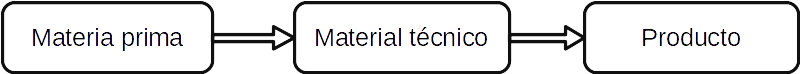

Clasificación de los materiales¶
Los materiales se pueden clasificar según muchos criterios. En esta unidad se estudiarán los materiales según su procesado, según sea el origen de la materia prima, los tipos de materiales y su clasificación según el impacto que tengan en el medio ambiente.
Clasificación según el nivel de procesado¶
{kind=link}
Los materiales siguen un proceso de transformación desde que se extraen hasta que se convierten en un objeto útil.
- Materia prima
Es un material primario que se encuentra en la naturaleza. La materia prima se puede transformar en materiales técnicos para fabricar productos.
Ejemplos de materias primas son: lana, cuero, seda, algodón, madera, hierro, cobre, petróleo, arcilla, látex.
- Material técnico
Estos son los materiales que se obtienen transformando las materias primas. Se utilizan para fabricar productos terminados.
Algunos ejemplos de materiales técnicos que se obtienen a partir de las materias primas:
- A partir de la madera se fabrican tablones macizos, listones, serrín, tablones de aglomerado, papel, cartón.
- A partir del algodón se fabrican los hilos, cuerdas, telas, fieltros.
- A partir del hierro se fabrican tubos, planchas, ángulos, tornillos, vigas, clavos, alambres.
- A partir del plástico se fabrican hilos, telas, cuerdas, láminas.
- Producto terminado
Estos son los productos que podemos comprar en las tiendas. Están compuestos de diversos materiales técnicos.
Ejemplos de productos terminados y los materiales que utilizan.
- Pantalón: fabricado con tela e hilo de algodón, hilos de plástico, remaches y cremallera de latón, etiqueta de cuero.
- Silla: fabricada con patas y tornillos de hierro, tacos, telas y pinturas de plástico, asiento y respaldo de madera.
- Estantería de salón: fabricada con madera aglomerada, cristales provenientes de la arena, clavos y tornillos de hierro, tiradores de plástico.
Clasificación según el origen de la materia prima¶
Los materiales se pueden clasificar según el origen de la materia prima:
- Materiales de origen vegetal:
- Algodón, lino, madera, aceites vegetales, resinas, cáñamo, caucho, corcho, celulosa.
- Materiales de origen animal:
- Lana, cuero, seda.
- Materiales de origen mineral:
- Petróleo, mármol, arcilla.
Clasificación según el tipo de material¶
Podemos clasificar los materiales asociando aquellos cuyas propiedades sean semejantes. Por ejemplo los metales, los materiales plásticos, etc.
Según esta clasificación tenemos los siguientes materiales:
Provienen de las piedras o arenas de la naturaleza. Se pueden clasificar en los siguientes grupos.
- Naturales: mármol, granito, pizarra, piedra caliza, arenisca.
- Aglomerantes: yeso, cemento, hormigón.
- Cerámicos: arcilla, loza, gres, porcelana.
- Vidrio.
Están hechos de madera maciza o de derivados de la madera prensados.
- Madera cortada: blandas y duras.
- Madera chapada: Contrachapado, madera laminada.
- Madera Aglomerada: aglomerado, DM.
- Papel y cartón.
Son materiales que agrupan desde las telas usadas en ropa o muebles, hasta un balón de cuero o la vela de un barco. Aunque su origen es muy distinto, todos tienen en común su gran flexibilidad y los procesos de cosido y pegado que se utilizan en la fabricación.
- Hilos: Seda, lana, algodón, poliéster.
- Telas: vaqueros, jersey de lana, vela de barco.
- Cueros: zapatos, guantes, sillones, cinturones, recipientes para líquidos.
Se extraen calentando óxidos y sulfuros que se encuentran en la naturaleza en forma de rocas. Se pueden clasificar en los siguientes grupos.
- Basados en hierro: hierro, acero, acero inoxidable.
- Basados en cobre: cobre, latón, bronce.
- Metales ligeros: aluminio, litio, magnesio.
- Metales pesados: plomo, cromo, cadmio, mercurio.
- Metales preciosos: oro, plata, rodio, platino.
Provienen del gas natural o del petróleo refinado. Se pueden clasificar en los siguientes grupos.
- Termoplásticos: PET, polietileno, PVC, polipropileno, poliestireno, nailon, teflón.
- Termoestables: baquelita, melamina, resina epoxi.
- Elastómeros: látex, neopreno, siliconas, caucho sintético.
Ejercicios¶
Clasifica los siguientes materiales según su origen mineral, vegetal o animal.
- Cinturón de cuero
- Calcetines de algodón
- Mallas de poliéster
- Tejas y ladrillos
- Corbata de seda
- Encimera de mármol
- Mesa de madera
- Jersey de lana
- Puerta de hierro
- Ventana de aluminio
- Camisa de lino
- Alpargatas de cáñamo
- Suelo de terrazo
Encuentra cinco objetos cotidianos de tu entorno que estén fabricados con cada uno de estos tipos de materiales:
Objetos de metal.
Objetos de plástico.
Objetos de madera.
Objetos de materiales pétreos.
Objetos con materiales de origen animal.
Busca en Internet cinco objetos cotidianos que se encuentren en tu entorno y estén fabricados con materiales tóxicos.